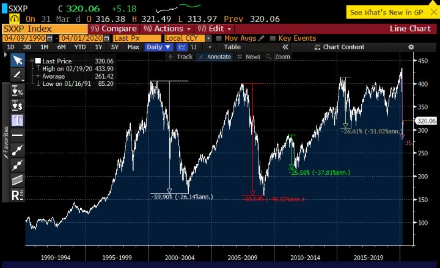
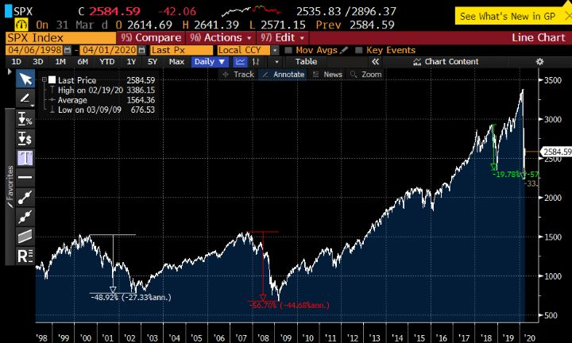
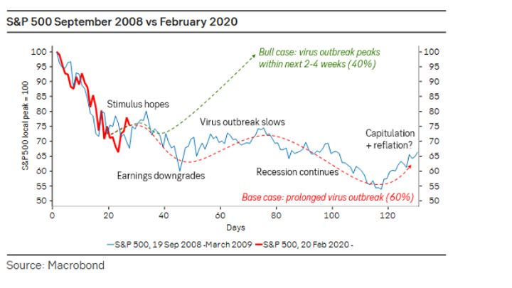
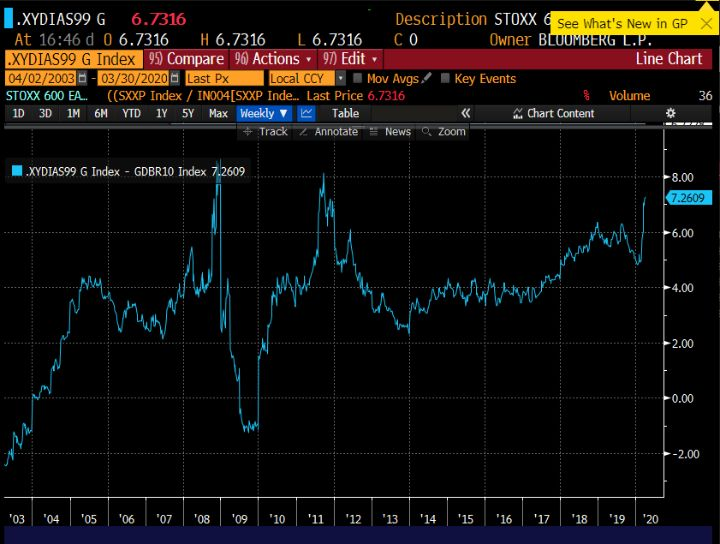
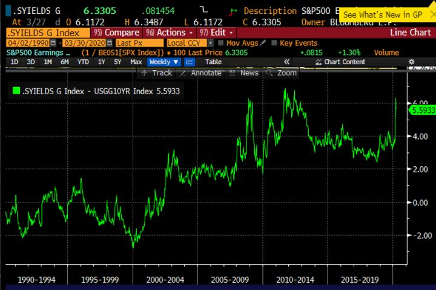
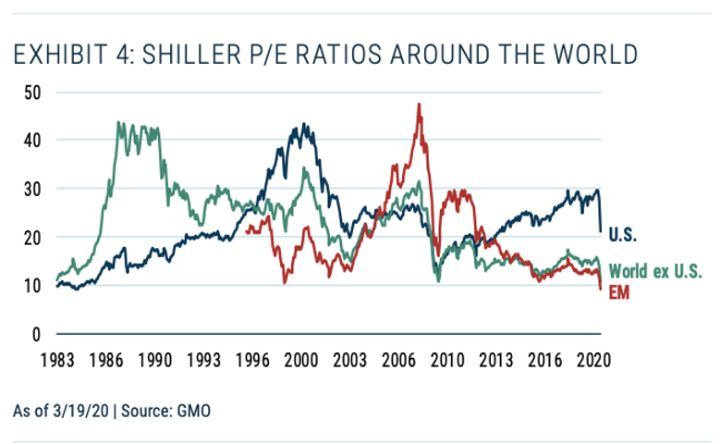
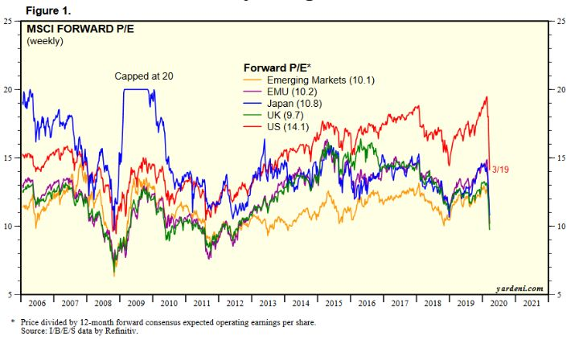

Katsaus ensimmäiseen neljännekseen ja tulevaisuuteen
Nämä ovat pelottavia aikoja. Maailmalla riehuu näkymätön vihollinen, joka tappaa ihmisiä ja lamauttaa talouden. Markkinoiden heilunta on niin korkealla tasolla, jossa se on ollut vain muutaman kerran pörssien historiassa. Katsomme toisistamme eristettyinä ja kauhuista valkeina pörssien syöksyä ja negatiivisten uutisten jatkuvaa virtaa.
Kunnes sitten kuin ihmeen kaupalla pörssit rynnivät ylös päivästä toiseen. Optimismi nostaa päätään, uutisvirrasta löytyy jo jotain positiivistakin ja osakkeiden ostokin tuntuu taas hyvältä idealta.
Olisin hyvin yllättynyt jos pelon ja ahneuden vuorottelu olisi nyt ohi. Eiköhän vuoristorata vain jatku.
En ole ikinä ennen saanut niin paljon kysymyksiä, pitäisikö nyt ostaa tai myydä osakkeita. Rehellisesti sanottuna en tiedä. Jatkuvasti säästävän ihmisen on toki aina hyvä ostaa osakkeita, muttei voi tietää, onko vielä parempi ostaa niitä puolen vuoden päästä. Ehkä on hyvä ostaa molempina hetkinä.
Tämä ei ole oikea aika olla varma oikein mistään. Vaikka tietäisi, miten koronavirus tulee leviämään, ei se välttämättä auta tietämään pörssin suuntaa. Olemalla vähän vähemmän varma asioista, välttyy pahimmilta virheiltä.
Itse ainakin tiedostan, että tämäkin kirjoitus voi näyttää naurettavalta viikon tai puolen vuoden päästä. Me emme vain tiedä niin paljon kuin luulemme. Tästä huolimatta pitää jatkaa arvailua ja asettaa panokset niiden mukaan.
Jos pitäisi tiivistää tilanne osakesijoittajan kannalta neljään ranskalaiseen viivaan, tekisin sen näin:
- Korona-piina tuskin on nopeasti ohi, ja sen aiheuttama talouden rytinä tulee olemaan ennennäkemättömän jyrkkä.
- Ensimmäinen pointti alkaa olla aika hyvin tiedossa, ja sen kieltäjät alkavat olla pientä vähemmistöä.
- Osakkeet ovat tulleet alas noin 25 % tänä vuonna, ja korot ovat äärimmäisen alhaalla tai negatiivisia. Jopa tuleva tulosten romahdus huomioiden osakkeet eivät ole kalliitta, jos olettaa maailman palautuvat muutamassa vuodessa takaisin raiteelleen. On maantieteellisiä alueita ja sijoitustyylejä, jotka ovat jopa hyvin edullisia.
- Osakkeita kannattaa jälleen kerran ostaa silloin, kun tilanne näyttää heikoimmalta. Emme osta osakkeita vielä kiireellä, mutta tarkoitus on ostaa osakkeita etenkin silloin, kun uutisvirta on hyvin negatiivista.
Tästä kirjoituksesta tuli varsin pitkä. Käsittelen ensin koronatilannetta, sitten sen talousvaikutuksia. Sen jälkeen koronan ja talouden suhdetta pörssikurssien psykologiaan. Kertaan myös meidän alkuvuoden suoriutumisen ja lopulta keskityn tulevaan strategiaan ja yksittäisiin ideoihin markkinoilla.
Korona
On kieltämättä naurettavaa, että kaikki luulevat olevansa korona-asiantuntijoita nykymaailmassa. Kuitenkin on vaikea muodostaa sijoitusnäkemystä, ellei tautiin ota ollenkaan kantaa.
Kirjoitin reilu kuukausi sitten vähän laajemman päivityksen blogiini koronasta ja markkinoista. Esitin siinä eri skenaarioita, joiden mukaan osakkeilla voisi olla odotusarvoisesti vähän laskuvaraa. Ne lievimmät skenaariot, joissa talous ei kutistu tänä vuonna, voidaan pyyhkiä pois pöydältä. Kuten kirjoitin, aikomuksena on myydä ralleihin, ja onneksi kevensimme osakepainoa uudestaan 20 % tasolle.
Mikä sai näkemyksen muuttumaan negatiivisemmaksi?
- Vaikka Kiinassa, Etelä-Koreassa, Singaporessa ja Hong Kongissa oli varustauduttu ja tehtiin oikeita asioista, tautia ei saatu nopeasti nitistettyä. Kiinassa korona on saatu hyvin hallintaan, mutta se on kestänyt ja keinot eivät täysin sovellu avoimiin yhteiskuntiin, eivätkä ihmiset täällä ole yhtä kuuliaisia. Sen sijaan tauti on levinnyt valtaosassa maissa nopeasti.
- Lämpötila ja kosteus eivät näytä olevan kovin merkittäviä tekijöitä leviämisessä, kuten alkuun spekuloitiin perustuen epidemia-alueiden hyvin samankaltaiseen ilmastoon sillä hetkellä. Ajatus, että huhtikuussa leviäminen helpottaa ilman merkittäviä sulkemisia ja kieltoja näyttää nyt epätodennäköiseltä. Kokonaisuudessa tauti tarttuu odotettua jopa herkemmin.
- Arvio taudin vakavuudesta on noussut. Kuolleisuusprosentit ovat korkeampia kuin aiemmin odotin. Ajattelin, että korkea kuolleisuus/sairastuneet johtuisi vähäisestä testauksesta. Mitä enemmän dataa tulee paljon testaavista (Etelä-Korea, Islanti, Saksa) maista, niin mietoja ja oireettomia tapauksia on kuitenkin lopulta rajatusti. Tästä syystä kuolleisuusprosentti näyttäisi olevan suuruusluokaltaan prosentin tasoa, vaikka kaikki pystyttäisiin hoitamaan. Toki ajan myötä tämä tarkentuu. Silti monien maiden yli 5 % kuolleisuus/vahvistetut tapaukset näyttäisivät johtuvat lievien tai oireettomien tapausten testaamattomuudesta. Myös nuorempien ihmisten tarve sairaalahoidolle on ollut suhteellisen suurta. Tämä on heikentänyt strategiaa, jossa yhteiskunta voisi toimia melko normaalisti, jos riskiryhmäläiset ja vanhat ihmiset pidetään eristyksissä.
Näiden edellisien seikkojen takia maailmanlaajuiset sulkutoimet tulevat olemaan laajempia ja pitempikestoisempia kuin olin ajatellut. Tämä taas johtaa hyvin syvään taantumaan.
Ajatus, että kaikki palaavat 3-4 viikon jälkeen töihin ja kuluttamaan, on hyvin optimistinen. Pitkän itämisajan ja oireettoman levittämisen takia korona on todella vaikea kitkeä nopeasti kokonaan yhteiskunnasta. Kaikissa maista se ei tule kuitenkaan onnistumaan.
On siis varsin todennäköistä, että tämän kanssa taistellaan jossain määrin koko loppuvuosi. Laajamittaisiin yhteiskunnan sulkuihin voidaan joutua vielä toiseenkin kertaan. Jos teemme asiat järkevästi, toinen isompi aalto ei kuitenkaan ole mikään välttämättömyys.
Pienenä peikkoina tämän lisäksi, emme tiedä immuniteetin kestoa. Jos se on hyvin lyhyt, on syytä alkaa rukoilla nopeaa rokotetta. Muuten elämme dystopian kaltaisessa sosiaalisen eristämisen yhteiskunnassa pahimmillaan vuosia. Toinen peikko on sitten vielä mutaatiot. On todennäköisempää, että korona mutatoituu lievemmäksi niin kuin virukset usein tekevät, mutta sitä ikävämpääkään vaihtoehtoa ei voi täysin unohtaa.
Mikä tuo aihetta optimismiin?
- Arviot lääkehoidon, testauksen kehittämisestä ja lääkkeistä perustuvat usein perinteiseen ajattelutapaan, eivät sodanaikaisen kaltaiseen globaaliin ponnistukseen. Jos rokotteen minimiaikana pidetään 1,5v, oma toiveeni on puolet tästä. En väitä olevani asiantuntija rokotteista. Asiantuntijoiden näkemysten selailu ei vielä tee asiantuntijaa, joten näkemykseen pitää suhtautua varautuneesti. Mutta projekteja on suuri määrä, testauksessa tullaan tekemään myönnytyksiä ja antamaan poskettomasti resursseja lupaavimmille hankkeille. Tätä ei voi verrata edellisiin rokoteprojekteihin. Relevantit vertailukohdat ovat Yhdysvaltojen Manhattan- ja Apollo-projektit. Tällä kertaa resursseja on vain moninkertaisesti, kun koko maailmaa pyrkii samaan tavoitteeseen. Kiinassa etenkin voidaan oikoa eettisiä mutkia, jolloin eteneminen voi nopeutua.
- Me opimme joka päivä. Nykyisen ensimmäisen aallon jälkeen tiedämme todella paljon enemmän. Pystymme kohta testaamaan lähes rajattomasti, meillä on enemmän ryhmiä jäljittämässä tartuntaketjuja ja sairaalahoidon kapasiteettia saadaan lisättyä. Tiedämme kannattaako kaikkien niitä hengityssuojaimia käyttää ja otamme käyttöön parhaat käytännöt ja datankäsittelysysteemit. Meillä on toimiva vasta-ainetestaus, joten tiedämme ketkä eivät voi sairastua, kuinka suuri osuus väestöstä on taudin kärsinyt ja arvioimme kauan immuniteetti kestää.
- Jossain määrin koronan luonne ja uutistulva saa ihmiset kauhistelemaan tautia enemmän kuin ehkä tilastollisesti pitäisi. Joka päivä maailmassa kuolee 150 000 ihmistä, joista 2/3 vanhuuteen liittyviin sairauksiin. Eli vuosittain kuolee noin 55 miljoonaa ihmistä. Se, että koronaan kuolisi vaikkapa 10 miljoonaa ihmistä olisi toki hyvin valitettavaa, mutta se olisi hyvä suhteuttaa muihin valtaviin numeroihin. Kun tilanne saadaan hallintaan, pitää myös pystyä arvioimaan onko jokaisen koronatartunnan välttäminen äärettömän arvokasta.
Mitä siis tarvitsemme ensimmäisen yhteiskunnan sulun jälkeen:
- Paljon testauskapasiteetti ja parhaita testauskäytäntöjä (drive-in, kotitestaus yms.)
- Testauskapasiteetti yhdistettynä maailman parhaiksi havaittuihin datajärjestelmiin.
- Kaksi ensimmäistä yhdistettynä tiukkaan seurantaan ja jäljittämiseen. Tässä voidaan joutua tinkimään väliaikaisesti kansalaisoikeuksista.
- Älypuhelinsovellukset, jotka antavat reaaliaikaista tietoa. Tällä saralla on paljon erilaisia mahdollisuuksia.
- Laajat vasta-ainetestaukset, josta saadaan selville taudin sairastaneet ja tietoja immuniteetista. Mahdollistetaan immuunien ihmisten toimiminen tehtävissä, jossa kontakteja.
- Sairaalakapasiteetin lisäämistä proaktiivisesti. Hengityskoneita, henkilöstön koulutusta, suojavälineitä, vähemmän sairaiden etähoitoa. Kokeellisten (mm. Remdesivir, Hydroxychloroquine, verensiirto parantuneilta) lääkkeiden testaaminen ja hankinta, vaikkei täyttä varmuutta toimivuudesta ole.
Mitä heikommin yhteyskunta panostaa näihin, sitä pidempään pitää olla suljettuna ja sitä säikympi pitää olla uusista tartunta-aalloista. Terveyteen isosti panostaminen auttaa siis myös taloutta myöhemmin.
Osa näistä voi osoittautua turhiksi myöhemmässä tarkastelussa. ”Katsotaan nyt vähän ensin” -strategia ei kuitenkaan ole osoittautunut toimivaksi tähän mennessä.
Eli tällä hetkellä todennäköinen skenaario voisi olla seuraava:
Maailmanlaajuisilla sulkutoimenpiteillä saadaan koronan kasvu katkeamaan huhtikuussa ja uudet tartunnat kääntyvät selkeään laskuun. Sitten katsotaan, mitkä toiminnot ovat tuotto/kustannus suhteelta kaikkein tärkeimpiä ihmisten hyvinvoinnille ja talouden kasassa pysymiselle. Rock-konsertit tuskin jatkuvat. Koulut ja päiväkodit pidetään ehkä auki lähinnä tärkeissä toiminnoissa olevien osalta, ja paremmin torjunnassa pärjänneissä maissa laajemmin. Lennot lisääntyvät, mutta pääosa neuvotteluista käydään etänä. R0 noussee taas ajoittain yli yhden, mutta yhteiskuntaa rajoitetaan vain siinä määrin, että terveydenhuoltokapasiteetti varmasti riittää. Tämä tarkoittaa riskiryhmille valitettavan pitkiä eristyksiä. Ihmiset oppivat vihdoin olemaan varovaisia, kätteleminen jatkuu vasta 2021 ja uutta suurta aaltoa ei tarvitse tulla. Testaus ja eristys toimivat paljon paremmin valtaosassa maissa. Ne maat, jotka tyrivät, eivät testaa riittävästi tai joiden dataan ei voi luottaa, eristetään muista maista paljon alkukevättä herkemmin.
Uskon siis, että paljon huomiota saanut Hammer and the Dance -strategia voi toimia. Se estää talouden romahduksen, muttei estä jyrkkää taantumaa tai huonosti hoidettuna lamaa. Seuraavassa lisää taloudesta.
Talousvaikutukset
Seuraavien kuukausien talouden syöksy tulee luultavasti olemaan modernin historian pahin. Siitä seuraa:
- Massatyöttömyyttä
- Konkursseja
- Ahdistusta, masennusta ja mielenterveyshäiriöitä
- Väliaikaisia hintahäiriöitä tuotantoketjujen mennessä solmuun
- Pidemmällä aikavälillä ilmiöitä, joita on vielä mahdotonta ennakoida. Keynesin animal spiritsit pääsevät valloilleen hyvässä ja pahassa. Palautuminen voi olla V, U tai L. Deflaatio ja/tai inflaatiot ovat molemmat mahdollisia. Populismi ja ääriliikkeet nostavat taas päätään. Koska mahdollisuuksien kirjo on laaja, on hyvä hajautus tärkeämpää kuin koskaan.
Keskuspankit ja hallitukset äyskäröivät vuotavaa venettä
Keskuspankkien ja hallitusten reaktiot ovat olleet odotuksia nopeampia ja parempia. Meidän pitäisi yrittää korvata väliaikaiset koronamenetykset keskuspankkirahalla, jotta kuopasta voidaan jatkaa ilman jumiin jäämistä. Tästä on toki poikkeavia näkemyksiä. Ymmärrän myös hyvin tehokkuusajattelua ja että rahaa pitäisi kohdentaa vain kaikkein eniten tarvitseville. Mutta kuten Mario Draghi kirjoittaa, nopeus ja päättäväisyys ovat elinehto, eikä valtioiden velkaantumista voi välttää.
Itse olen sitä mieltä, että hieman tehoton ylireagointi on parempi kuin tehokas alireagointi. Sotien ulkopuolella mitään vastaavaa kuilua ei ole nähty. Meidän pitäisi jäädyttää talous niin, etteivät talouden täyspysähdyksen aikana toimintakykyiset yritykset mene konkurssiin tai joudu pysyvästi irtisanomaan ihmisiä. En usko, että olemassa olevat järjestelmät kestävät tulevaa tsunamia, joten olisi hyvä varautua nopeasti.
Olisi hyvä miettiä myös yhteiskuntarauhaa. Jos pelastamme vain yritykset, pelaamme kiekon populistien ja ääriliikkeiden lapaan. Ei ole huono idea tukea rahallisesti myös ihmisiä, jotta maksuvaikeuksilta, velkavankeuksilta ja katkeruudelta vältytään.
Toistaiseksi Aasiassa ja Yhdysvalloissa näyttää hyvältä. Euroopassa perinteinen pohjoisen ja etelän konflikti uhkaa hidastaa sekä fiskaalisia että rahapoliittisia toimia. FED on istunut tukevasti kuskin paikalla, mutta EKP on tällä kertaa sentään kyydissä. Tämä on eri keskuspankki kuin se, joka nosti vuosina 2008 ja 2011 korkoja juuri ennen taantumaa.
Suurin ero finanssikriisiin nähden on, että keskuspankit ovat sammuttamassa tulipaloja välittömästi niiden syttyessä. Ehkä suurin kysymys tässä vaiheessa on, saadaanko tukitoimet pienille ja keskisuurille yrityksille riittävän nopeasti ja tehokkaasti. Keskuspankkien aktiivisuus on hyvin positiivista osakkeille ja muille omaisuuserille, ja suurin syy miksi finanssikriisin laajuinen romahdus markkinoilla on epätodennäköinen.
Se laskeeko BKT tänä vuonna 6 % vai 12 % maailmanlaajuisesti ei ole ehkä niin oleellista kuin miltä talous näyttää koronan jälkeen. Melko pian sijoittajat alaskirjaavat vuoden 2020. Tämän vuoden tuloksilla ei ole silloin enää väliä. Kaikkein tärkeintä on, miten yritykset, hallitukset ja keskuspankit pystyvät ylläpitämään talouden toimintakyvyn tämän montun yli.
Markkinat – miten osakurssit heijastuvat tähän kaikkeen
Oma ajatus oli viimeisen vuoden aikana, että seuraavaa taantumaan tai sen vaaraan pitää ostaa osakkeita suhteellisen nopeasti osakkeiden laskettua. Tämä johtuu siitä, että finanssikriisin varjoissa keskuspankit ja jopa valtioiden päättäjät tulevat ylireagoimaan uhkiin. Sitten iski tämä. Nyt singot ja bazookatkaan eivät välttämättä riitä pitämään markkinan sieraimia pinnan päällä.
Helmi- ja maaliskuun noin kuukauden pituinen lasku oli pörssien historian jyrkimpiä. Markkinat menivät ahneudesta puhtaaseen pelkoon tasan kuukaudessa.
Euroopan Stoxx600 indeksi näyttää aika synkältä, jos osinkoja ei huomioida. Olemme taas paljon alempana kuin 20 vuotta sitten. 36 % laskun jälkeen pitää tulla vielä toinen 36 %, jotta päästään edellisten syvien laskumarkkinoiden syvyyteen. Toisaalta korjasimme alaspäin jo enemmän kuin eurokriisissä ja vuoden 2015 lievässä karhumarkkinassa. Viimeisen 30 vuoden kuvaaja on ollut melkoinen vuoristorata:

Yhdysvaltojen S&P 500 indeksissä on noustu aivan eri korkeuksille kuin edellisissä huipuissa. Tästä huolimatta osakkeiden lasku ollut hieman lievempää kuin Euroopassa — ensin 34% alas ja sitten yli 15% ylös:

Markkinat koostuvat hyvin erilaisista toimijoista. Markkinaa ymmärtääkseen on hyvä tietää, että siellä on hyvin eri aikajäntein ja tavoittein toimivia sijoittajia. Jotain esimerkkejä:
- Eläkeyhtiöt – näiden pitäisi olla hyvin pitkäaikaisia sijoittajia, mutta vuonna 2008-2009 moni joutui myymään myös pohjille vakavarisuussäännösten takia. Ovat varmasti olleet iso tekijä viimeisen viikon nousussa, kun rebalansoivat salkkuja takaisin tavoiteallokaatioon, eli myyvät velkakirjoja ja ostavat osakkeita
- Hedge fundit – markkinoiden nopeaa rahaa. Liikuttavat ehkä eniten markkinoita hyvin lyhyellä aikavälillä, koska tekevät nopeita liikkeitä ja osa vielä isolla velkavivulla.
- Commodity trading advisors (CTA) – Etenkin Yhdysvalloissa merkittävä yhteisö, joka sijoittaa eri markkinoihin pääasiassa futuurien kautta. Suuri osa trendin mukaisesti treidaavia, joten myyvät markkinoiden kääntyessä laskuun
- Risk parity — Rahastot, jotka määrittävät osakepainoaan volatiliteetin mukaan ja ovat sijoittajat samalla velkakirjoihin velkavipua käyttäen.
- Yksityissijoittajat — näitä pidetään hätähousuina, muttei sekään välttämättä pidä paikkaansa. Anakin toistaiseksi tässä laskussa yksityissijoittajat eivät ole panikoineet.
- Osakkeita liikkeelle laskevat ja omia osakkeitaan ostavat yhtiöt. Omien ostot ovat olleet Yhdysvalloissa tärkeä nousun polttoaine. Nyt omien osakkeiden ostot vähentyvät ja osakeannit lisääntyvät. Osakkeita tuleekin enemmän myyntiin markkinoille kuin niitä sieltä poistuu.
- Optioiden ostajat ja myyjät. Nämä ovat iso tekijä hyvin suurissa liikkeissä, koska optioiden myyjät joutuvat laskussa myymään enemmän ja enemmän osakkeita suojatakseen omia positioitaan. Optioiden kautta määrittyy myös ns. pelkokerroin VIX.
Tämä ei ole kattava esitys, asia on todellisuudessa monimutkaisempi. Tuon eri markkinaosapuolet esiin, koska niillä kaikilla on oma merkitys markkinoiden nousuissa ja laskuissa.
Kun osakkeet kääntyvät jyrkkään laskuun, suurella osalla osapuolista on syitä myydä. Hedge fundit haluavat laskea riskitasojaan, koska asiakkaat kuumottavat, jos kuukausi menee liikaa tappiolle. CTA:t ovat usein trendin seuraajia. Vaikkei heidän hallinnoitavat varat pyöri kuin vain sadoissa miljardeissa dollareissa, ne myyvät hyvin aggressiivisesti jopa shortiksi asti. Risk Parity –rahastot laskevat usein riskejä, kun volatiliteetti nousee, eli kun osakkeet laskevat. Pari viikkoa sitten heillä oli isoja ongelmia, kun samana päivänä romahtivat sekä osakkeet että velkakirjat. Optioiden myyjät taas joutuvat pakosti myymään, jos haluavat pysyä riskineutraalina osakekurssien laskiessa.
Joten kun osakkeet laskevat vaikkapa 10 % päivässä, niin kyse ei aina ole siitä, että ihmiset nyt vain haluavat myydä osakkeita. Monen tahon strategian ja riskienhallinnan mukaan niin on vain tehtävä.
Nopeassa laskussa moni näistä joutuu myymään osakkeita niin reilusti, etteivät perinteiset pitkänaikavälin sijoittajat (yksityissijoittajat, rahastot, family officet, eläkeyhtiöt yms.) riitä ostamaan kaikkia tarjolle tulevia osakkeita tai indeksifutuureita. Hinta joustaa, ja seuraa paniikinomaista myyntiä, joka tällä kertaa kulminoitui 23.3.2020 maanantaihin.
Paniikissa ei katsota enää juuri mitä myydään, tärkeintä on vain pienentää positioita ja saada käteistä.
Voi olla, että pahin paniikki on nyt ohi. Suurin osa nopeammin liikkuvista markkinatoimijoista on jo sopeuttanut omistuksensa uuteen epävarmaan tilanteeseen. Kuten viikon aikana tapahtui, markkinat voivat kuminauhan tavoin palautua ylöspäin hyvinkin nopeasti.
Eri aikajänteiden toimijat selittävät osittain, miksi osakkeiden liikkeissä ei joskus tunnu olevan mitään järkeä. Ei mitkään uutiset selitä, miksi vuoropäivin osakkeet laskevat 8 % ja nousevat 6 %. Ei siinä ole kenenkään mielestä järkeä, mutta se tapahtuu, koska ihmiset toimivat hyvin eri lähtökohdista. Jos olet vaikka mennyt shortiksi osakkeisiin pohjilta, 20 % nousu alkaa tuntumaan niin pahalta, että teet mitä vain päästäksesi epämukavuudesta eroon — lisäten ostoillasi nousua.
Sekä paniikeissa että euforioissa polttoaineena toimii usein ne tahot, joilla menee huonoimmin. Paniikeissa myyvät korostetusti ne, jotka olivat velkavivulla liikenteessä ja euforioissa ne, jotka ovat hävinneet rahaa shorttaamalla.
Mitä jatkossa?
SEB:llä oli hyvä kuvaaja 2008 analogiasta nykyhetkeen. Syksyn Lehman-kriisin kurssilaskua seurasi helpotusralleja, mutta pohjat nähtiin vasta puoli vuotta myöhemmin:

Uskomme, ettei tällä kertaa lasketa niin paljoa kuin finanssikriisissä, koska keskuspankit ja hallitukset ovat proaktiivisempia ja heillä on paremmat työkalut, joita ne käyttävät entistä hanakammin.
Silti olisimme yllättyneet, jos osakemarkkinoiden pohjat tehtiin ennen kuin meillä on juuri tietoa taloudellisen vahingon laajuudesta yrityksille. Tuntuu, että paradoksaalisesti sijoittajat ovat huolissaan yritysten taseista ja tuloksentekokyvystä, mutta ostavat osakeindeksejä, koska keskuspankit ostavat kaikkea. Mutta voi toki olla, että pohjat on jo nähty. Markkinat ovat täynnä yllätyksiä.
Osakkeet eivät näytä erityisen halvalta absoluuttisesti, etenkään tuloslaskun jälkeen. Mutta kun katsotaan vaihtoehtoisia sijoitusvaihtoehtoja, osakkeet ovatkin hyvä diili, jos uskoo normaaliuden palaavan esimerkiksi vuonna 2022.
Euroopan osakeriskipreemio alkaa lähestyä finanssikriisin ja eurokriisin huippuja. Tällä tarkoitetaan siis tulostuoton (E/P) ja riskittömän 10 vuotisen velkakirjan (Saksa) erotusta. Olemme jo nyt poikkeuksellisissa lukemissa. Toki tulosten lasku heikentää lukua, mutta niin on käynyt myös edellisissä kriiseissä. Toki finanssikriisissä parhaat paikat ostaa oli vasta, kun tulokset olivat jo romahtaneet. Alla kuvaaja:

S&P500 ja Yhdysvaltojen 10 vuotisen velkakirjan erosta tulos on aikalailla sama. Osakkeiden tulostuoton ero riskittömään tuottoon on parhaassa parissa prosentissa verrattuna viimeisiin vuosikymmeniin:

Voidaan toki argumentoida, että korot voivat nousta. Tämä on kuitenkin jotain, mitä vastaan varsinkin isommat sijoittajat voivat suojautua.
Pitkällä aikavälillä etenkin EM ja maailma ex-USA näyttävät halvoilta sykleistä tasoitetun P/E:n(CAPE) perusteella. Tämä on toiminut erinomaisena työkaluna historiassa arvioida 10 seuraavan vuoden tuottoja. Negatiivinen puoli on, että se ei toimi alkuunkaan vuoden tähtäimellä ja historiallinen toimivuus ei ole tae tulevasta.

Myös perinteinen eteenpäin katsova P/E-luku on tullut alas eri markkinoilla pitkästä aikaa alle lähihistorian keskiarvojen. On kuitenkin hyvä huomata, että näin nopeassa romahduksessa tulosennusteet eivät ole laskeneet vastaamaan uutta tilanne kovin hyvin:

Meillä on siis kaksi vastakkaista argumenttia:
- Karhumarkkinan alussa ostaminen ei ole ollut historiallisesti optimaalinen paikka ostaa. Etenkään, kun absoluuttisesti hinnoittelukertoimilla (P/E, P/S, FCF%) markkinat eivät vielä ole halpoja.
- Osakkeiden arvostustasot suhteessa korkoihin ovat hyvin edullisia, vaikka huomioisi väliaikaisen tulospudotuksen. Samaa viestiä kertoo sykleistä tasoitettu P/E(CAPE), jonka mukaan tilastollisesti Yhdysvaltojen ulkopuolella on nyt ostettaessa saatavissa historiallista tuottoa korkeampia tuottoja.
Moni valitsee näistä sen perustelun, joka sopii parhaiten intuitioon. Eli perustellaan näkemys sitä tukevilla faktoilla. Itse pidän molempia hyvinä argumentteina. Jos olisin vahvasti ykkösen kannalla, emme vielä ostaisi osakkeita. Jos olisin kakkosargumentin kannalla, ostaisimme innolla osakkeita jo nyt.
Karhumarkkinoissa nähdään ralleja. Ehkä perusskenaariossa oletamme, että olemme vielä karhumarkkinassa. Ralleihin on hyvä keventää, ja ahdinkoon hyvä lisätä.
Lähiviikot koronan suhteen tulevat olemaan suhteessa positiivisempaa uutisvirtaa. Kaikkien ollessa pääasiassa kotona, on päivänselvää, että tartuntaluvut laskevat. Nyt oleellista on kuitenkin, mitä tapahtuu, kun rajoitteita aletaan purkaa. Edelleen, meidän perusskenaariossa elämä jatkuu, muttei se jatku kuten ennen. Samalla kuitenkin talousuutiset ja yrityskohtaiset uutiset jatkavat heikkoina.
Q2 jälkeen talous tulee kasvamaan voimakkaasti edelliseen vuosineljännekseen verratessa, mutta ei verrattuna edelliseen vuoteen. Osakkeet ovat enää 25-30% alle huipputasojen ja olemme matkalla riskiseen paikkaan. On hyvin mahdollista, että tulee vielä houkuttelevampiakin ostotilaisuuksia.
Kuitenkin on hyvä muistaa, että pörssit liikkuvat aina ennen taloutta. Jos odottaa tilanteen selkenemistä, ovat osakkeet jo nousseet todennäköisesti paljon. Sen takia osakeostoja on hyvä tehdä sekä matkalla alas että ylös. Jos on liian fokusoitunut pohjalta ostamiseen, jää helposti kokonaan ostamatta.
Ensimmäinen neljänneksen tuotto
Meidän neljänneksemme päätyi 3 % tappiolle. Se ei ole hyvin, muttei oikein huonostikaan. Vuodenvaihteen salkulla olisimme olleet yli 10 % pakkasella, joten pelkkää tyrimistä neljännes ei ollut.
Neljänneksen pahin virhe oli jähmeys. Kun korona alkoi levitä Kiinassa, laskimme riskejä ja otimme pientä suojaa, mutta pääasiassa pidimme uuteen tilanteeseen sopimattomat positiomme. Confirmation bias, loss aversion, recency bias, endowment effect — listaa henkilökohtaisista ajattelun vinoumista voisi jatkaa pitempäänkin. Toisaalta kukaan meistä ei ole näille täysin immuuni. Huipulla osakepainomme oli vajaa 20%.
Lisäksi saudien luu kurkkuun -strategia muille öljyntuottajille tuli puun takaa. Kesken yhden jyrkimmistä pörssilaskuista saatiin bonuksena vielä öljy-yhtiöiden ja Venäjä-omistustemme totaalinen murskaus. Siinä ei edes suojaksi lyhyeksi myydyt öljyfutuurit auttaneet pelastamaan tilannetta.
Itselläni iskee tällaisessa tilanteessa selviytymismoodi. Kun häviää rahaa, on parempi pikkuhiljaa alkaa ryömiä pinnalle kuin yrittää tuplaa ja kuittia. Palataan taas siihen moodiin, missä pyrkii tekemään laadukkaita päätöksiä. Tulokset kyllä seuraavat. Kun tulee tuloksia, voi taas kasvattaa riskitasoja. Markkinoiden voittaminen on riittävän vaikeata muutenkin, epätasapainossa sitä ei kannata juuri edes yrittää.
Se tarkoittaa vähemmän sekä brutto- että nettopositioita. Epävarmoina aikoina varmojen aikojen strategiat eivät usein toimi.
Kun osakkeet alkuun laskivat rajusti, nostimme aiemmin laskemaamme osakepainoa. Asiaa enemmän tutkailtuamme päätimme onneksi palata varovaisemmalle linjalle. Tällaisessa tilanteessa pääoman suojelu on ykköstavoite — hyvät tuotot olisivat bonusta.
Strategia
Pääkohdat strategiallemme ovat:
- Ostamme kun muut panikoivat. Kevennämme, kun noustaan ennenaikaisesti.
- Pyritään löytämään väliaikaisia häiriökohtia markkinoilta likviditeetin puuttuessa.
- Nostetaan riskitasoja sitä mukaan, kun tulee onnistumisia tai osakkeiden ja muiden omaisuuslajien houkuttelevuus kasvaa.
Perinteisesti karhumarkkinoissa paniikkeihin ostaminen ja ralleihin myynti on ollut voittava strategia. Se kuulostaa paljon helpommalta kuin onkaan. Vasta jälkikäteen näemme käännepisteet. Tämän lisäksi sijoittajat oppivat ja dataa on saatavilla, joten tällä kertaa asiat voivat mennä aivan toisin kuin ennen. Mutta luultavasti se on parempi lähtökohta kuin päinvastainen.
Ostimme 18 ja 19. marraskuuta ja myimme 26. ja 27. päivä noin osakkeita noin 10 % salkun arvostamme. 1,5 % tuottoa koko salkulle alle viikossa.
Ostimme Norjan kruunua 20 % salkustamme, ja teimme noin 1,3 % tuoton koko salkulle yhdessä vuorokaudessa, kun kruunu teki noin 10% nousun vuorokauden aikana.
Molemmissa ostoissa yhteistä oli, että tarjosimme likviditeettiä hinnasta välittämättömille toimijoille. Teimme sen liian varovaisesti, mutta taas pallon päälle päästyämme voimme alkaa tekemään rohkeammin asioita.
Legendaarisella arvosijoittajalla Seth Klarmanilla on hyvä pätkä pohjan löytämisen yrittämisestä:
"While is it always tempting to try to time the market and wait for the bottom to be reached (as if it would be obvious when it arrived), such a strategy has proven over the years to be deeply flawed. Historically, little volume transacts at the bottom or on the way back up and competition from other buyers will be much greater when the markets settle down and the economy begins to recover. Moreover, the price recovery from the bottom can be very swift. Therefore, an investor should put money to work amidst the throes of a bear market, appreciating that things will likely get worse before they get better."
Eli pikkuhiljaa osakepainoa pitäisi vaan pystyä kasvattamaan. Jos osakkeet vain nousevat tästä pisteestä, niin harmi homma. Emme kuitenkaan voi ostaa liikaa liian nopeasti vain tämänkään pelosta. Jos keskuspankit ja hallitukset onnistuvat rauhoittamaan markkinan pysyvämmin näin varhaisessa vaiheessa suurta kriisiä, emme voi kuin taputtaa. Meillä on kuitenkin se hyvä tilanne, että voimme luoda tuottoa markkinoilta ilman suurta osakepainoakin.
Viimeisimpään ralliin myydyt osakkeet ovat tiputtaneet osakepainomme hieman alle 20 %:n, mutta pyrimme entistä nopeammin kasvattamaan sitä, jos osakkeet taas laskevat.
Miten meidän tulisi suhtautua osakemarkkinoiden laskun suuruuteen helmikuun huipuista?
- 10 %: Osakemarkkinat eivät ole kiinnostavia näin pienellä alennuksella matkalla varmaan taantumaan ja epävarmuuteen. Helmikuussa oltiin hyvin optimistisia, joten 10% olisi vasta paluu neutraaliin tilaan, vaikkei toimintaympäristö olisikaan dramaattisesti heikentynyt.
- 20 %: Osakemarkkinat ovat hinnoitelleet jyrkän tulostaantuman kuluvalle vuodelle ja pienen heikennyksen tuleville vuosille. Osakkeet ovat nyt jo edullisempia tulostaantumasta huolimatta, jos aikajänne on riittävän pitkä.
-30 %: Osakemarkkinan laskusta suurin osa on jo noussutta riskipreemiota. Tällöin osakkeet ovat selvästi houkuttelevampia. Osakkeita on hyvä ostaa reilusti heikkenevästä uutisvirrasta huolimatta.
-40%: Osakkeita pitää ostaa reilusti, vaikka ajatus oksettaisi. Valtaosa osakkeiden laskusta on jo lyhyen tähtäimen eri toimijoiden ahdinkoa.
-50%: Tässä vaiheessa myyntipuolella ovat usein pakosta myyjät. Uudessa keskuspankkimaailmassa laajamittaiset osakkeidenkin ostot tulevat kyseeseen. Viimeisetkin varat on kaivettava markkinoille, mietittävä limiitillä ostoja ja sitten myyntikielto pariksi vuodeksi. Uutiset ovat tässä vaiheessa pelkkää huonoa, joten niiden seuraaminen kannattaa vain lopettaa. Samoin salkun arvon katselu.
Toki markkinat ovat laskeneet muutamia kertoja enemmänkin. Toisaalta tämäkin menee ohi. Osakkeiden hyvin pitkän aikavälin tuotto on ollut lopulta melko vakaa, joten syviin korjauksiin on kannattanut ostaa.
Meidän caset tuleville vuosille
Meillä on noin 50 osakkeen ostoslista valmiina, kun hinnat vain ovat sopivia. Niissä on paljon laadukkaita yhtiötä, joissa hinta on ollut aiemmin este ostoille. Pyrimme erityisesti katsomaan pienempiä yhtiöitä, sillä siellä on arvostukset tulleet paikka paikoin jo huomattavan houkutteleviksi. Entisestään halventuneiden arvoyhtiöiden lisäksi tähyilemme yhtiöitä aloilta, jotka hyötyvät megatrendeistä kuten terveydenhuolto ja ikääntyminen, bioteknologia, automaatio, gaming, uusiutuva energia ja ESG, urbanisaatio ja vaurastuminen. Katsotaan miten menee ja voimme palata näihin myöhemmin.
Suomesta esimerkkejä laadukkaista yhtiöistä, joissa hinta ei pohjilla ole enää ollut ongelma ostoillemme, ovat Sampo ja Fortum.
Jotain isompia teemoja:
1. Öljy-yhtiöt. Monen mielestä tämä on ehkä maailman huonoin sijoitusajatus juuri nyt. Toistaiseksi olemmekin vielä varovaisesti mukana. Lyhyesti teesimme on tämä: Öljy painetaan hetkeksi tasolle, missä valtaosa tuottajista tekee tappiota ja joutuu sulkemaan tuotantoa. Koronan ajaessa kysynnän ennennäkemättömään laskuun, tämäkään ei auta öljyn hintaan. Mutta koronan helpottaessa, meillä on pian liian vähän öljyä. Sama öljysykli on tapahtunut monta kertaa aiemminkin. Koska kysyntä kääntyy kymmenen vuoden päästä laskuun, ei investointeja tehdä riittävästi, öljyn hinta nousee vielä kerran sadan dollarin hintaluokkaan.
- Suuret öljy-yhtiöt (BP, Shell, Equinor) laajentavat jatkuvasti myös puhtaaseen (aurinko, tuuli) ja puhtaampaan (maakaasu) energiaan. Näiden segmenttien verrokit hinnoitellaan korkeilla kertoimilla. Öljy-yhtiöllä on resursseja toimia sekä maalla että merellä, kokemusta isoista projekteista ja hyvä kassavirta nykyisistä toiminnoista.
- Tällä hetkellä näihin ei haluta ESG-syistä koskea. Mutta miten öljyn tuottaminen on vähemmän eettistä kuin tuotteiden tuottaminen öljystä? Eikö ongelmaa pitäisi ratkaista kuluttamalla vähemmän öljyä, ei moralisoimalla öljyn tuottajia? Öljyä kuitenkin tarvitaan melkein kaikilla sektoreilla.
- Perinteisenkin toiminnan kassavirrat tulevat olemaan poikkeuksellisen alhaalle arvostettuja kunhan öljyn hinta palautuu kestävälle tasolle (>40usd)
- Pohjoismaissa löytyy kiinnostavia yhtiötä kuten Aker BP ja Lundin Petroleum, jotka hyötyvät lisäksi heikentyneistä valuutoista.
- Shale-sektorin vahvat pelurit (esim. EOG) näyttävät edullisilta. Velkaisemmalta puolelta tuotot tulevat olemaan huikeita, jos yhtiöt selviävät.
2. Kehittyvät markkinat
- Kasvava työväestö ja alhaiset arvostustasot. Yleisesti kehittyvien markkinoiden hinnat ovat hyvin alhaiset, mikä on aiemmin luvannut hyviä tuottoja pitemmällä aikavälillä. Olemme sijoittaneet kehittyville markkinoille ETF:n kautta.
- Hyvin alhaisella arvostuksella tämä vaikuttaa hyvältä ostoikkunalta, vaikka korona tulee kurittamaan myös näitä markkinoita. Jossain määrin luulisi todella nuoren väestön pehmentävän sisämarkkinoiden iskua. Mutta toki silti näissäkin maissa on edessä kovat ajat. Dollarivelkaiset yhtiöt kärsivät etenkin, jos valuutat heikkenevät suhteessa dollariin
- Uutena ostokohteena iShares Frontier Markets ETF (FM). Meidän ongelmamme tämän ETF:n kanssa on ollut, että Kuwait ja sen pankit ovat olleet aivan liian suurilla painoilla(30%) ETF:ssä. Nyt Kuwait nostetaan frontier markets-statukselta Emerging market statukselle MSCI:n luokituksissa. Tällä on meille kolme vaikutusta
- Markkinoiden joista tykkäämme (Bangladesh, Vietnam, Nigeria yms) painot nousevat, kun taas vähiten kiinnostava markkina tippuu pois
- Kuwaitin nosto MSCI:n saa luultavasti sijoittajat ennakoimaan muutosta, ostamalla maan osakkeita vähän ennen muutosta, mikä lienee hyväksi rahastolle.
- Muiden maiden osakkeet saavat jonkin verran ostopainetta, jos sijoittajien paino pysyy ennallaan frontien markets:lla.
3. Kulta.
Olemme omistaneet lähes toimintamme alusta asti kultaa. Keskuspankit luovat likviditeettiä ennennäkemättömällä vauhdilla ja hallitukset elvyttävät valtavilla alijäämillä taloutta. Tämä on oppikirjamainen tilanne, jossa kullan pitäisi pärjätä hyvin. Mielestämme kullan arvo sijoittajalle on erityisen suuri silloin, kun reaalikorot ovat hyvin negatiiviset. Jos häviät 2 % ostovoimaa pitämällä rahaa tilillä tai velkakirjoissa, kullan koron puute ei olekaan enää niin suuri puute, kunhan se säilyttää ostovoimansa. Salkussamme on myös pieni erä hopeaa, yhteensä näiden paino noin 13 %.
4. Teknologiayhtiöt
- Teknologiassa on tulevaisuus ja haluaisimme kovasti päästä sektorin alipainostamme eroon. Meissä on liikaa arvosijoittajan vikaa – vaikka pidämmekin kasvusta ja momentumista – joten arvostustasot ovat pitäneet meidät monista suosikkiyhtiöistä erossa. Tähän toivomme muutosta.
- Pienyhtiöihin keskittyneet SaaS-yhtiöt voisivat tulla alas, kun asiakkaat kärsivät. Vielä toistaiseksi henkilökohtaiset kontaktit ovat tärkeässä roolissa myynninedistämisessä, joten SaaS-tyyppinen liiketoiminta ei liene immuuni tälle kriisille.
- Omistamme jättiyhtiöitä Googlea ja Amazonia edelleen vaikkeivat ne ole halpoja. Näistä etenkin Amazon on pitänyt pintansa hyvin. Jos markkina yltyisi uuteen kunnon sukellukseen, pääsemme kenties lisäämään sitäkin.
Loppusanat
Se, miten me sijoitamme ei todennäköisesti sovellu suurimmalle osalle normaaleista työssäkäyvistä osakesäästäjistä. Jo nyt osakemarkkinat tarjoavat hyvät positiiviset odotusarvot, jos sijoitushorisontti on yhtään pidempi. Kaikille muille emme suosittelisi alle 20% osakepainoa tässä markkinatilanteessa. Se voisi hyvin olla selvästi korkeampi.
Meillä on tavoitteena tehdä tuottoa kussakin mahdollisessa aikaikkunassa, sillä elantomme muodostuu tästä. Siinä tavoitteessamme epäonnistuimme tässä kvartaalissa. Mutta siksi emme ole vielä isommalla osakepainolla liikkeellä. Ja vaikka tänään osakepainomme olisi suurempi, voi mielemme muuttua huomenna.
Siksi osakesäästäjän kannattaa keskittyä oman sijoitussuunnitelman noudattamiseen. Niin kauan kuin on nettosäästäjä, on osakkeiden lasku positiivinen asia. Kunhan muistaa olla myymättä, ja mielellään aina ostaa lisää!
Tämä kirjoitus ei ota siis kovin voimakkaasti kantaa, nousevatko osakkeet seuraavan kuukauden tai kahden aikana. Koitamme kävellä tien keskellä näinä epävarmoina aikoina. Korona on laajentanut negatiivisten mahdollisuuksien kirjoa, ja toistaiseksi olemme pitäytyneet pääomiemme puolustusmoodissa. Kun valo näkyy kirkkaampana suuntaan tai toiseen, on aika ottaa rohkeammin näkemyksiä.
Meillä on selkeä suunnitelma, että ostamme osakkeita niiden halventuessa. Jos osakkeet eivät laske, niin ainakin tilanteen maailmassa voi olettaa parantuneen.
Maailma ei lopu tälläkään kertaa. Ihmiset ovat sitkeätä porukkaa, ja nousemme tästä taas jotain oppineena.
Disclaimer: Kolumnit sisältävät mielipiteitä ja mahdollisesti tietoa omista sijoituksistamme, jotka voivat vaihdella päivästä toiseen. Mitään, mitä kirjoitamme ei tule ottaa sijoitussuosituksena. Kuten teksteissämme painotamme, päätökset kannattaa aina tehdä itse. Lukija vastaa itse voitoistaan ja tappioistaan.